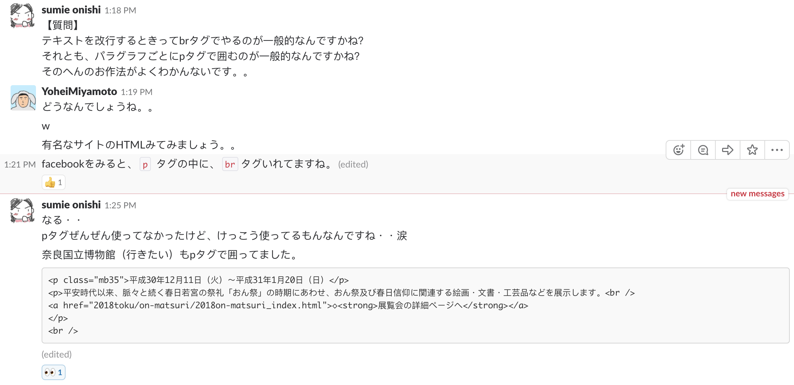

POSTS
Slack
Slackの使い方についての説明です。
ユーザー登録
招待メールから登録をお願いします。
アプリインストール
PC
公式サイトからインストール
https://slack.com/intl/ja-jp/downloads
スマホアプリ
app storeから検索してインストール
使い方の確認
公式ドキュメント
https://get.slack.help/hc/ja/categories/200111606
非公式ドキュメント
以下のページに簡潔に使い方がまとまっていました。
https://tech-camp.in/note/technology/14901/
Slackを少し使ってみる
チャンネルの確認
各言語ごとにチャンネルが用意されているので質問内容に応じて使い分けてください。
メッセージの投稿
// テキストメッセージ
hello
// 絵文字の投稿
hello :smile:
// 引用（1行）
>hello
// 引用（複数行）
>>>hello
world
メッセージへのリアクション
リアクションのボタンをクリック
